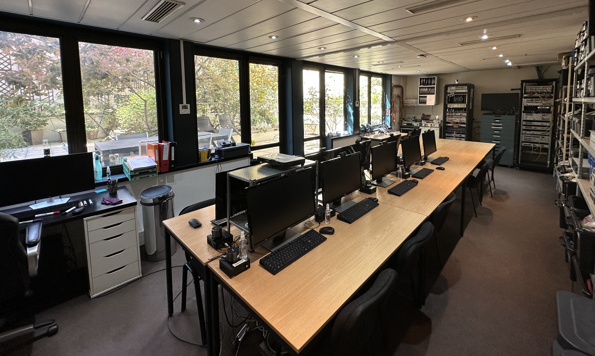

AMARIS, créée en 1997, experte dans le domaine de la téléphonie, des télécommunications et de l’informatique, offre ses services de conseils et de formations continus depuis plus de 24 ans. Notre expertise nous permet de proposer des formations qui recouvrent tous les domaines de la télécommunication. Nous réalisons également des installations téléphoniques et assurons le service maintenance du matériel pour les professionnels. Accessoirement, nous procédons à l’achat et à la revente de matériels informatiques et téléphoniques (commutateurs, cartes et postes numériques téléphoniques) afin d’assurer le renouvellement de matériel d’ancienne génération.
